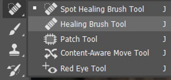
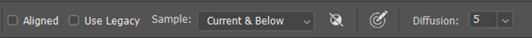
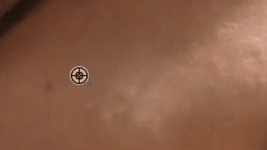

In the world of digital photography postproduction of your photos are especially important. Fixing blemishes and the skin on your model is necessary. Imperfections can be very distracting and will take away from what you are trying to show.
Fixing the more obvious blemishes and wrinkles should be the first thing you do. This creates a cleaner image for you to work with. An important tool that is very simple to use is the healing brush tool.
1. First, you're going to need to create a new layer by selecting the new layer icon.
2. After creating the layer select the healing brush. Right click the option and select “Healing Brush Tool” in the drop-down menu
3. Make sure you have the Sample settings, “Current and Below” on the top bar.
4. From here you can work methodically through each blemish. Hold the “Alt” key and left click to sample the skin you would like to cover the blemish with. Then left click to cover the blemish.
Come back for more updates! Next we will be using the dodge and burn technique to further expand!
Until then check out this video by PiXimperfect, thatll show you how to do it.